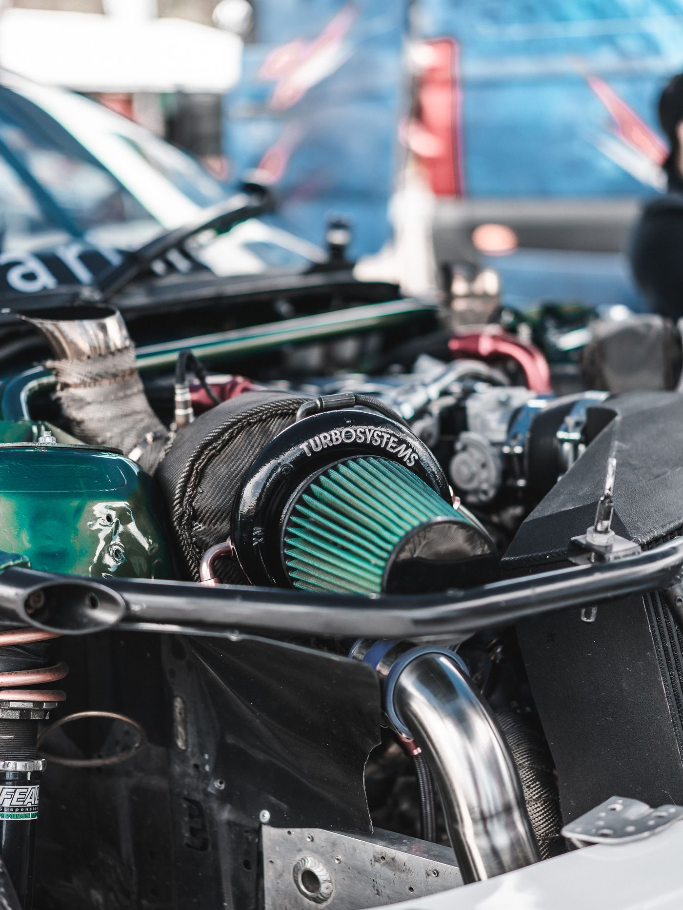
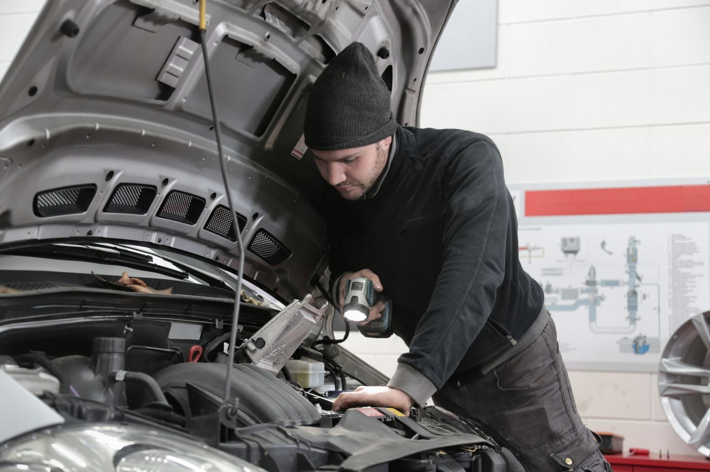

In the shop


Wichita, Kansas
A transmission repair shop in Wichita offering full-service transmission repair and service, with auto repairs and maintenance, rated A+ by the Better Business Bureau.

World Wide Transmission Inc is a transmission repair shop in Wichita. It offers full-service transmission repair and service, with auto repairs and maintenance. The business is rated A+ by the Better Business Bureau.

1407 E Central Ave, Wichita, KS 67214
Monday to Friday 8:00 AM to 5:00 PM (Saturday and Sunday not listed)